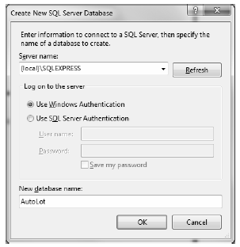
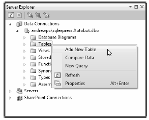
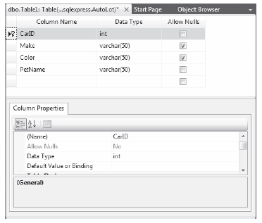
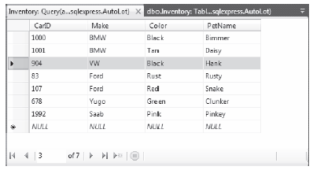
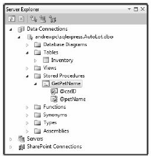
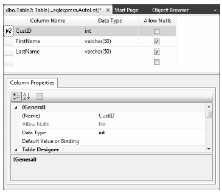
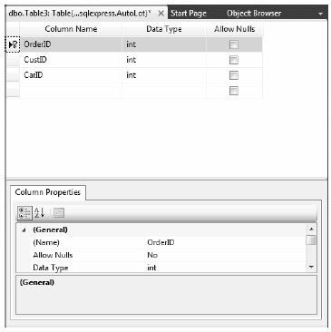
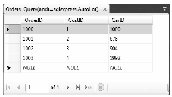
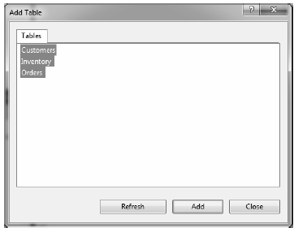
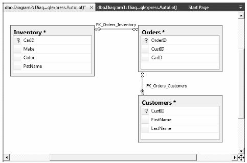

As you work through this chapter, you will execute queries against a simple SQL Server test database named AutoLot. In keeping with the automotive theme used throughout this book, this database will contain three interrelated tables (Inventory, Orders, and Customers) that contain various bits of data representing order information for a fictional automobile sales company.
The assumption in this book is that you have a copy of Microsoft SQL Server (7.0 or higher) or a copy of Microsoft SQL Server 2008 Express Edition (http://msdn.microsoft.com/vstudio/express/sql). This lightweight database server is perfect for your needs in this book: it is free, it provides a GUI front end (the SQL Server Management Tool) to create and administer your databases, and it integrates with Visual Studio 2010/Visual C# 2010 Express Edition.
To illustrate the last point, the remainder of this section will walk you through the construction of the AutoLot database using Visual Studio 2010. If you use Visual C# Express, you can perform operations similar to what is explained here by using the Database Explorer window (you can load this from the View > Other Windows menu option).
Note You will use the AutoLot database throughout the rest of this book
To begin building your testing database, launch Visual Studio 2010 and open the Server Explorer using the View menu of the IDE. Next, right-click the Data Connections node and select the Create New SQL Server Database menu option. In the resulting dialog box, connect to the SQL Server installation on your local machine (with the (local) token) and specify AutoLot as the database name (Windows Authentication should be fine; see Figure 21-3).
Note If you use SQL Server Express, you will need to enter (local)\SQLEXPRESS in the Server name text box.
Figure 21-3 Creating a new SQL Server 2008 Express database with Visual Studio 2010
At this point, the AutoLot database is empty of any database objects (e.g., tables and stored procedures). To insert a new database table, right-click the Tables node and select Add New Table (see Figure 21-4).
Figure 21-4 Adding the Inventory table
Use the table editor to add four columns (CarID, Make, Color, and PetName). Ensure that the CarID column has been set to the Primary Key (do this by right-clicking the CarID row and selecting Set Primary Key). Figure 21-5 shows the final table settings (you don’t need to change anything in the Column Properties editor, but you should notice the data types for each column).
Figure 21-5 Designing the Inventory table
Save (and then close) your new table; also, be sure you name this new database object Inventory. At this point, you should see the Inventory table under the Tables node of the Server Explorer. Right-click the Inventory table icon and select Show Table Data. Enter a handful of new automobiles of your choosing (to make it interesting, be sure to include some cars that have identical colors and makes). Figure 21-6 shows one possible list of inventory.
Figure 21-6 Populating the Inventory table
Later in this chapter in the chapter, you will learn how to use ADO.NET to invoke stored procedures. As you might already know, stored procedures are routines stored within a particular database that operate often on table data to yield a return value. you will add a single stored procedure that will return an automobile’s pet name, based on the supplied CarID value. To do so, right-click the Stored Procedures node of the AutoLot database within the Server Explorer and select Add New Stored Procedure. Enter the following in the editor that pops up:
CREATE PROCEDURE GetPetName @carID int, @petName char(10) output AS SELECT @petName = PetName from Inventory where CarID = @carID
When you save your procedure, it will automatically be named GetPetName, based on your CREATE PROCEDURE statement (note that Visual Studio 2010 automatically changes the SQL Script to “ALTER PROCEDURE...” as soon as you save it for the first time). Once you do this, you should see your new stored procedure within the Server Explorer (see Figure 21-7).
Note Stored procedures do not have to return data using output parameters, as shown here; however, doing things this way sets the stage for talking about the Direction property of the SqlParameter later in this chapter
Figure 21-7 The GetPetName stored procedure
Your testing database will have two additional tables: Customers and Orders. The Customers table (as the name suggests) will contain a list of customers; these which will be represented by three columns: CustID (which should be set as the primary key), FirstName, and LastName. You can create the Customers table by following the same steps you used to create the Inventory table; be sure to create the Customers table using the schema shown in Figure 21-8.
Figure 21-8 Designing the Customers table
After you save your table, add a handful of customer records (see Figure 21-9).
Figure 21-9 Populating the Customers table
You will use your final table, Orders, to represent the automobile a given customer is interested in purchasing. Do this by mapping OrderID values to CarID/CustID values. Figure 21-10 shows the structure of your final table (again, note that OrderID is the primary key).
Figure 21-10
Now add data to your Orders table. Assuming that the OrderID value begins at 1000, select a unique CarID for each CustID value (see Figure 21-11).
Figure 21-11 Populating the Orders table
For example, the entries used in this text indicate that Dave Brenner (CustID = 1) is interested in the black BMW (CarID = 1000), while Pat Walton (CustID = 4) has her eye on the pink Saab (CarID = 1992).
The final task is to establish parent/child table relationships between the Customers, Orders, and Inventory tables. It is easy to do this using Visual Studio 2010 because you can elect to insert a new database diagram at design time. Using the Server Explorer, right-click the Database Diagrams node of the AutoLot database and select the Add New Diagram menu option. This brings up a dialog box that lets you pick which tables to add to the diagram. Be sure to select each of the tables from the AutoLot database (Figure 21-12).
Figure 21-12 Selecting tables for your diagram
You can begin establishing the relationships between the tables by clicking the CarID key of the Inventory table and (while holding down the mouse button) drag it to the CarID field of the Orders table. Once you release the mouse, accept all defaults from the resulting dialog boxes.
Now repeat the same process to map the CustID key of the Customers table to the CustID field of the Orders table. Once you do this , you should see the class dialog box shown in Figure 21-13 (note that you enable the display of the table relationship labels by right-clicking the designer and selecting Show Relationship Labels).
Figure 21-13 The interconnected Orders, Inventory, and Customers tables
With this, the AutoLot database is complete! This is a far cry from a real-world corporate database, but it will serve your needs over the remainder of this book. Now that you have a database to test with, you can dive into the details of the ADO.NET data provider factory model.